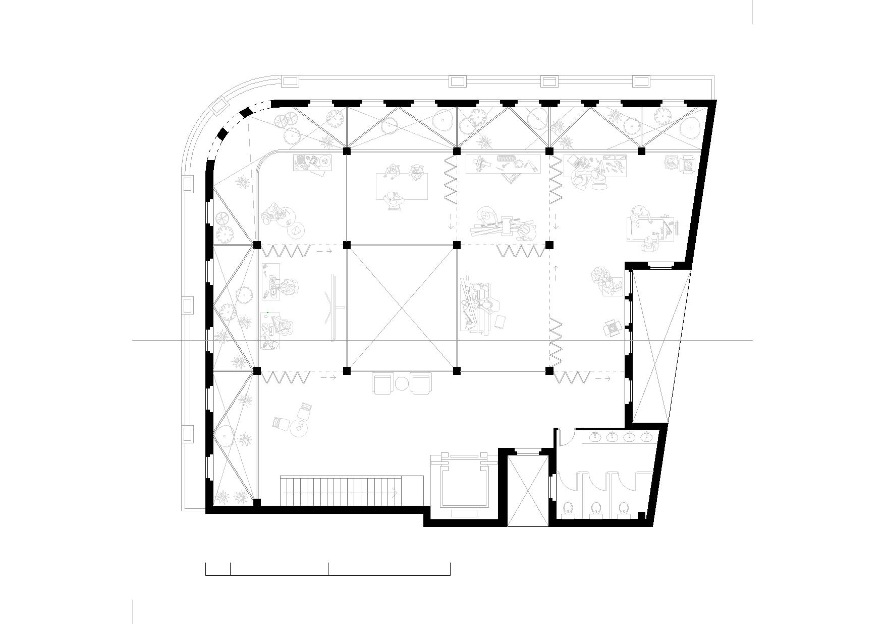

Oficina de Habilidades
Conceito
O projeto nasce da vontade de responder a duas urgências sociais fortemente entrelaçadas: a dificuldade de inserção de pessoas em situação de vulnerabilidade no mercado de trabalho, e o descarte de resíduos urbanos na região dos Campos Elísios, que atualmente gera cerca de 365 toneladas de resíduos por mês.Diante deste cenário, propomos um espaço que funciona como oficina de habilidades. A ideia central é criar oportunidades reais de autonomia e reintegração social por meio do trabalho e do cuidado. A oficina se apresenta como um espaço de aprendizado e produção, voltado à recuperação e reinvenção de objetos descartados. Em vez de adotar a mentalidade de que “quebrou, vai para o lixo”, buscamos resgatar a ideia de que itens que pararam de funcionar podem ter um novo propósito. Mais do que um local de conserto, ela é pensada como um ambiente de reconstrução simbólica, onde as pessoas possam também reconstruir suas trajetórias e desenvolver competências profissionais.
O projeto também contempla a criação de uma creche integrada ao espaço. Essa estrutura permite que as mães possam participar ativamente das oficinas, ao mesmo tempo em que seus filhos estão em um ambiente seguro e acolhedor. Compreendendo que no Brasil existem cerca de 11 milhões de mães solo, muitas delas impedidas de trabalhar por não terem com quem deixar seus filhos. Em essência, o projeto é uma resposta arquitetônica e social que articula trabalho, cuidado e sustentabilidade, transformando o resíduo, tanto material quanto social, em potência de transformação coletiva.
Escolha do Edifício
O antigo Hotel Bristol foi escolhido por seu valor histórico e arquitetônico. Localizado entre as estações Luz e Júlio Prestes, em uma esquina estratégica do centro de São Paulo, o edifício carrega a memória das transformações urbanas da região, mantendo uma presença simbólica na paisagem.Decisão de Intervenção
A decisão de demolir o núcleo do edifício partiu do diagnóstico de severo comprometimento estrutural. A ausência de cobertura, infiltrações constantes e o avanço da vegetação colocavam em risco a integridade da construção. Preservamos a fachada como gesto de respeito à história, mas reconfiguramos o interior para garantir segurança, funcionalidade e novos usos ao espaço.Proposta de Estrutura
A fachada original será mantida em seu estado atual, sem restauração. Ela não será reconstituída mas será tratada, sendo assim preservada como está, com todas as marcas do tempo, funcionando como testemunho da história do edifício.Como a estrutura antiga está comprometida, será construído um novo edifício por dentro, com estrutura metálica independente. Essa nova estrutura garantirá a estabilidade e o funcionamento do conjunto, sem depender da fachada para sustentação.

A fachada será apenas contida e travada pontualmente, por meio de elementos metálicos que a impedem de colapsar, mas sem interferência visual significativa.
Do interior do novo edifício, os usuários poderão ver a fachada antiga por dentro, criando um diálogo direto entre o passado exposto e a nova ocupação.
Essa solução respeita a integridade da pré-existência, evita sua descaracterização e garante segurança estrutural, flexibilidade de uso e clareza construtiva.
Do interior do novo edifício, os usuários poderão ver a fachada antiga por dentro, criando um diálogo direto entre o passado exposto e a nova ocupação.
Essa solução respeita a integridade da pré-existência, evita sua descaracterização e garante segurança estrutural, flexibilidade de uso e clareza construtiva.
